A half-day workshop at IEEE VIS 2025
Not all work that moves the field forward fits into the model of a standard conference paper or conference talk. The memorability or intellectual impact of work is often inextricably linked to this non-conventional form, whether it is a reflection, provocation, critique, satire, artistic statement, or manifesto. Successful venues like ACM CHI’s alt.chi (“a forum for controversial, risk-taking, and boundary pushing research at CHI”) and various “unconferences” have emerged in the past years as a way of providing an outlet for this sort of unconventional work.
Visualization, and IEEE VIS specifically, which incorporates perspectives in the intersection between art and design, statistics and psychology, we believe is uniquely placed to both generate and value the non-traditional. What’s more, we observed a long-running desire for an outlet for non-traditional work among both long-time attendees as well as those researchers or practitioners who do not currently feel welcome or appreciated in the IEEE VIS environment.
Therefore, based on the (often unexpected) utility of unconventional work, the long standing and successful models of “alternative” conferences, and an expressed interest in bringing these models to the IEEE VIS community, we founded an “alt.VIS” workshop in 2021 as a venue for work that is otherwise difficult to place in the main conference for reasons of form, format, or topic.
The remit of this workshop, mirroring alt.CHI, is relatively broad both in terms of scope of topics and presentation types: our selection criteria are more focused on impact. What sort of work might cause the field to rethink its priorities or ways of operating? What work might highlight under-explored or neglected areas of visualization study or application? What, as per Kant, would “interrupt [our] dogmatic slumber” and stir us to action?
|
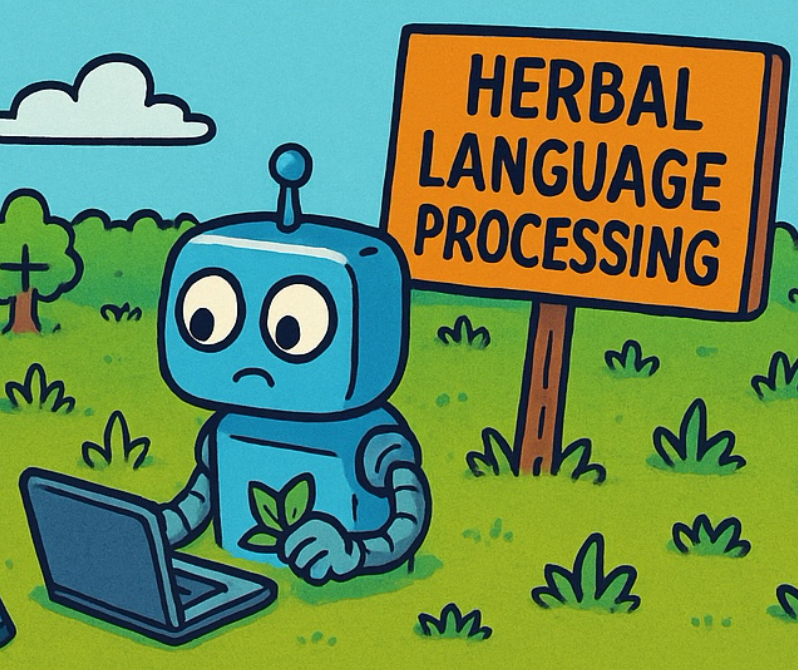 |
From "Arbitrary Timberland" To "Skyline Charts": Is Visualization At Risk From The Pollution of Scientific Literature?
Lonni Besançon
|
|
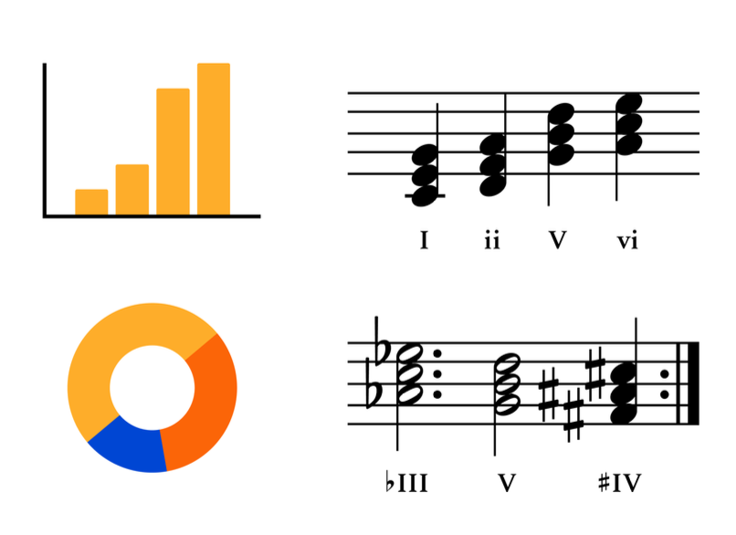 |
Data Melodification FM: Where Musical Rhetoric Meets SonificationBest Original ScoreKe Er Amy Zhang, David Grellscheid, Laura GarrisonWe propose a design space for data melodification, where standard visualization idioms and fundamental data characteristics map to rhetorical devices of music for a more affective experience of data. Traditional data sonification transforms data into sound by mapping it to different parameters such as pitch, volume, and duration. Often and regrettably, this mapping leaves behind melody, harmony, rhythm and other musical devices that compose the centuries-long persuasive and expressive power of music. What results is the occasional, unintentional sense of tinnitus and horror film-like impending doom caused by a disconnect between the semantics of data and sound. Through this work we ask, can the aestheticization of sonification through (classical) music theory make data simultaneously accessible, meaningful, and pleasing to one's ears? |
|
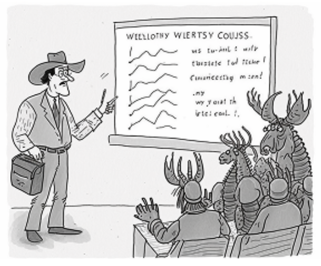 |
Charts and MeasuresMost metaAndrew M McNuttalt.vis has gone mainstream. What else can be thought of a venue that has reached its fourth edition besides that is has become institutionalized? Enured to the real truths and harsh realities of the world surrounding us, alt.vis no longer has the aesthetic clarity or purity to conduct its much-needed work. To rectify this issue, we propose a new workshop housed within the alt.vis workshop entitled ``Charts and Measures’'—housed within the now-conventional alt.vis. To ensure the alternative integrity of this new venue, we limit submissions to only those approved to submit by the organizing committee, both of which are composed of Andrew McNutt. These proceedings include a range of topics, such as the inherent imperialism of some research fields, to quagmires we have found ourselves struggling through. |
|
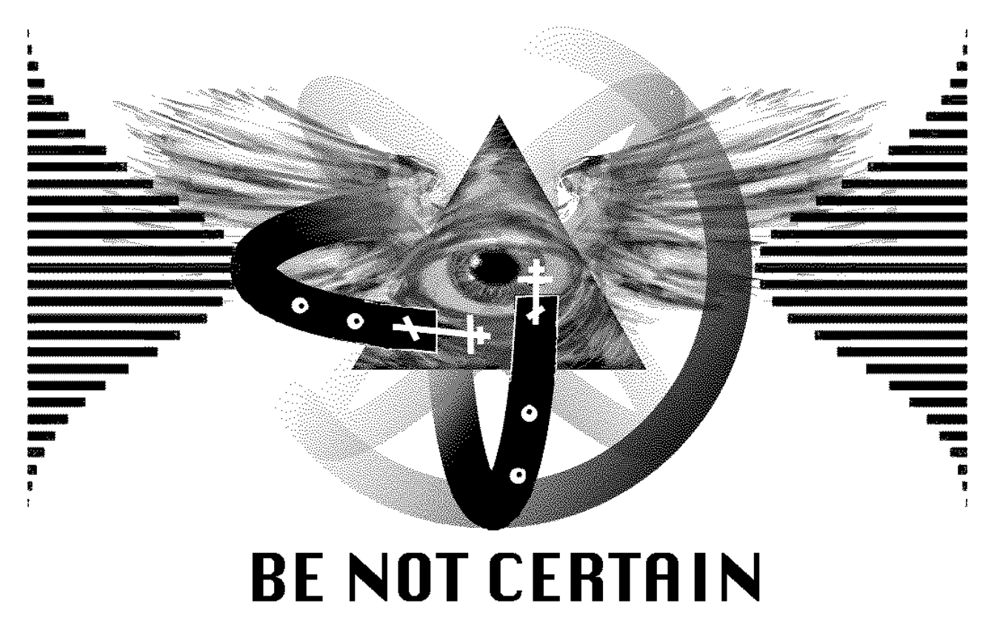 |
A Priest, a Rabbi, and an Atheist Walk Into an Error Bar: Religious Meditations on Uncertainty VisualizationQuite ritualisitcMichael Correll, Lane HarrisonIn this provocation, we suggest that much (although not all) current uncertainty visualization simplifies the myriad forms of uncertainty into error bars around an estimate. This apparent simplification into error bars comes only as a result of a vast metaphysics around uncertainty and probability underlying modern statistics. We use examples from religion to present alternative views of uncertainty (metaphysical or otherwise) with the goal of enriching our conception of what kind of uncertainties we ought to visualize, and what kinds of people we might be visualizing those uncertainties for. |
|
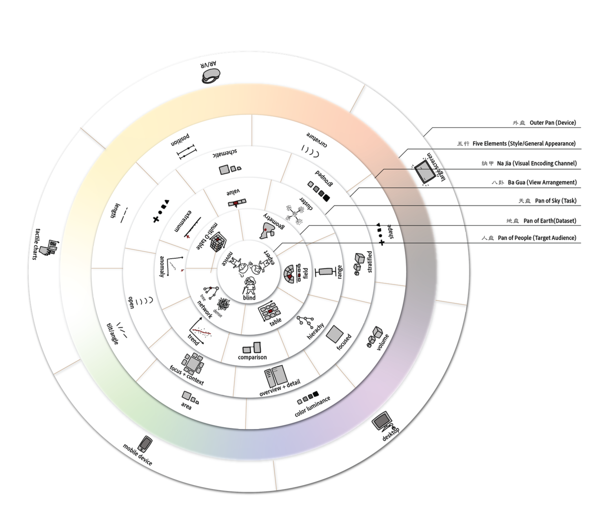 |
The Feng Shui of Visualization: Design the Path to SUCCESS and GOOD FORTUNEMost AuspiciousChang Han, Andrew M McNuttSuperstition and religious belief system have historically shaped human behavior, offering powerful psychological motivations and persuasive frameworks to guide actions. Inspired by Feng Shui---an ancient Chinese superstition---this paper proposes a pseudo-theoretical framework that integrates superstition-like heuristics into visualization design. Rather than seeking empirical truth, this framework leverages culturally resonant (superstitious) narratives and symbolic metaphors as persuasive tools to encourage desirable design practices, such as clarity, accessibility, and audience-centered thinking. We articulate a set of visualization designs into a Feng Shui compass, reframing empirical design principles and guidelines within an engaing mythology. We present how visualization design principles can be intepreted in Feng Shui narratives, discussing the potential of these metaphorical principles in reducing designer anxiety, fostering community norms, and enhancing the memorability and internalization of visualization design guidelines. Finally, we discuss Feng Shui visualization theory as a set of cognitive shortcuts that can exert persuasive power through playful, belief-like activities. |
|
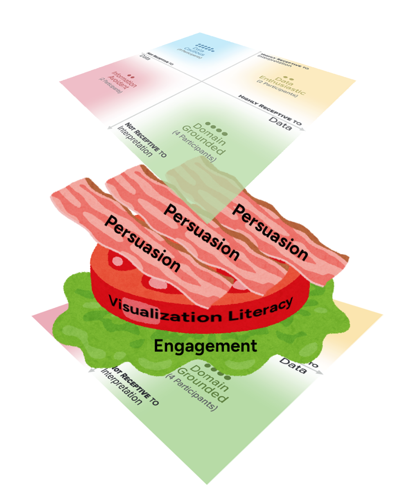 |
Theory is ShapesTastiestMatthew Varona, Maryam Hedayati, Matthew Kay, Carolina NobreTheory figures" are a staple of theoretical visualization research. Common shapes such as Cartesian planes and flowcharts can be used not only to explain conceptual contributions, but to think through and refine the contribution itself. Yet, theory figures tend to be limited to a set of standard shapes, limiting the creative and expressive potential of visualization theory. In this work, we explore how the shapes used in theory figures afford different understandings and explanations of their underlying phenomena. We speculate on the value of visualizing theories using more expressive configurations, such as icebergs, horseshoes, Möbius strips, and BLT sandwiches. By reflecting on figure-making’s generative role in the practice of theorizing, we conclude that theory is, in fact, shapes. |
|
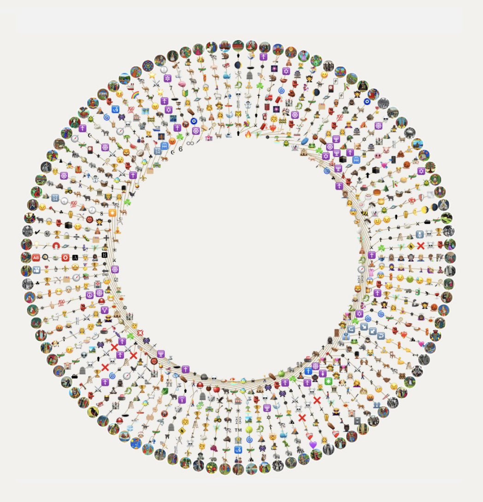 |
Data Alchemy 201: Glass Bead GamesMost Likely to Start a Cult FollowingVictor Schetinger, Rodrigo Oliveira de OliveiraIn this paper, we present an approach to explore data and latent spaces by playing games on them, inspired by Herman Hesse's 1946 book "The Glass Bead Game" (GBG), which talks about a lineage of games that are played by making connections between ideas. We use vector embeddings to "glue" different datasets and provide semantic lattices on which games can be designed and played. Through a narrative exposition, we explain the fundamentals of our framework, showcase intermediary results, and discuss our long-term goals with this line of research. Fundamentally, we are still pursuing the same vision from the previous alt.vis papers, which is to look for meaningful semiotic structures within latent spaces, but in this time we propose a practical approach to get there based on visual analytics, games, and category theory. We provide reproducible instructions to bootstrap our approach on the Thompson Motif Index (a rich catalog of narrative motifs) and play card games with it using the Tarot minor arcana. In honor of the GBG, we frame them as "motif beads", and show the countless possibilities that they allow. |
|
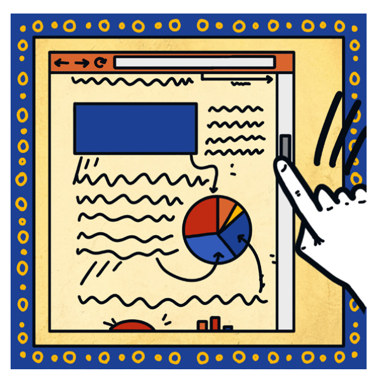 |
Visiologus: Mysterious and Mythical Creatures from the World of VisualizationMost IlluminatedAlyxander BurnsThe World of Visualization is home to a dazzling array of unique and resplendent species. From small and simple to vast and complex, from those who delight a single person to those that capture the imaginations of thousands each day: there are endless niches, adaptations, and variations to celebrate and explore. This (satirical) text draws inspiration from bestiaries of the past to tell stories about visualization life forms both real and imagined as a means to inspire interest in the diversity of the World of Visualization and spur reflection on our relationship to it. In particular, this compendium contains examples from two groups of creatures in the World of Visualization: Mysterious Beasts (which we know little about, irrespective of their abundance in our world) and Mythical Beasts (which come alive in our actions and the stories we tell), with a focus on monsters related to information communication. |
Visualization Was Here: Reorienting Research When Visualizations Fade into the BackgroundMost likely to make us notice we've stopped noticingPaul C ParsonsVisualization research often centers on how visual representations generate insight, guide interpretation, or support decision-making. But in many real-world domains, visualizations do not stand out—they recede into the background, stabilized and trusted as part of the everyday infrastructure of work. This paper explores what it means to take such quiet roles seriously. Drawing on theoretical traditions from joint cognitive systems, naturalistic decision making, and infrastructure studies, I examine how visualization can become embedded in the rhythms of expert practice—less a site of intervention than a scaffold for attention, coordination, and judgment. I illustrate this reorientation with examples from mission control operations at NASA, where visualizations are deeply integrated but rarely interrogated. Rather than treat invisibility as a failure of design or innovation, I argue that visualization’s infrastructural presence demands new concepts, methods, and critical sensibilities. The goal is not to diminish visualization’s importance, but to broaden the field’s theoretical repertoire—to recognize and support visualization-in-use even when it fades from view. |
|
|
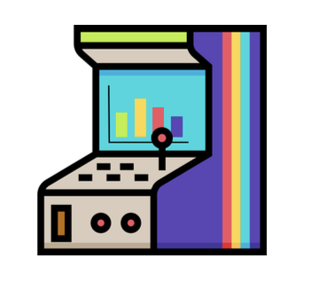 |
VisPubs Games: Joyful Discovery of Visualization Research(ers)Most joyfulDevin Lange, Zach Cutler, Maxim LisnicMany sophisticated tools exist to help researchers find the academic literature they are searching for, but what about finding work that you aren't looking for? We promote joyful discovery of visualization research through two games (Colon and Authored) available to play now at https://games.vispubs.com. We believe these games provide several benefits to the visualization research community. First, the joyful discovery of visualization research and researchers occurs because these games randomly select authors and publications, thus exposing players to research areas they may not typically engage with. Second, these games were made by visualization researchers for visualization researchers --- playing this game, sharing results with friends in person and online, has the potential to strengthen our academic community. Third, games centered around publication authors provide a passive way for academics to gain exposure within the community. Finally, we hope these games are simply fun to play. Try them now at games.vispubs.com. |
|
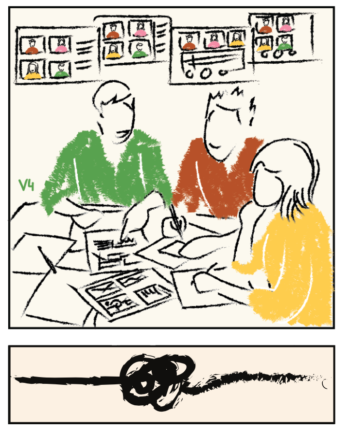 |
The Fuzzy Front Ends: Reflections on the Never-Ending Story of Visualization Co-DesignMost elegantly fuzzyWei Wei, Foroozan Daneshzand, Zezhong Wang, Erica Mattson, Charles Perin, Sheelagh CarpendaleCo-design is an increasingly popular approach in HCI and visualization, yet there is little guidance on how to effectively apply this method in visualization contexts. In this paper, we visually present our experience of a two-and-a-half-year co-design project with the local arts community. Focusing on facilitating community exploration and sense-making around arts funding distribution, the project involved a series of co-design sessions between visualization researchers and members of the arts community. Through these iterative sessions, we built shared understanding and developed visualization prototypes tailored to community needs. However, the practice is far from complete, and we found ourselves continually returning to the ``fuzzy front end'' of the co-design process. We share this ongoing story through comic-style visuals and reflect on three fuzzy front ends that we encountered during the project. By sharing these experiences with the visualization community, we hope to offer insights that others can draw on in their own community-engaged co-design work. |
|
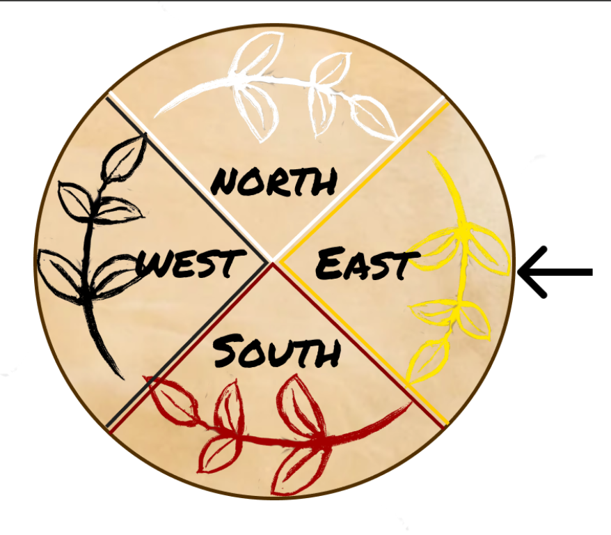 |
Toward Design Justice in Data Visualization: An Ojibwe Language and Medicine Wheel Approach for Designing Data VisualizationsMost Culturally GroundedSean J Dorr, Daniel F. KeefeWe explore the role the Design Justice framework and movement might play in data visualization by demonstrating an Ojibwe language and Medicine Wheel approach to designing ecological data visualizations. The long-term goals are to reduce the barriers for Indigenous communities to participate in data-driven conversations and create a design space for tribal and non-tribal communities to converge for co-design activities. The design provocation described in this paper draws upon gradient design and the Ojibwe language to create culturally relevant visual encodings for analyzing wild rice data. We believe that ecological data visualizations designed in this way, grounded in design justice principles, can transform data analysis and discourse across ecological data stakeholder communities. Early feedback from Ojibwe community demonstrations suggests that orienting the data to concepts familiar to Ojibwe culture and traditions helps ground the data in context and provides opportunities for envisioning new ways to encode and interact with data. |
|
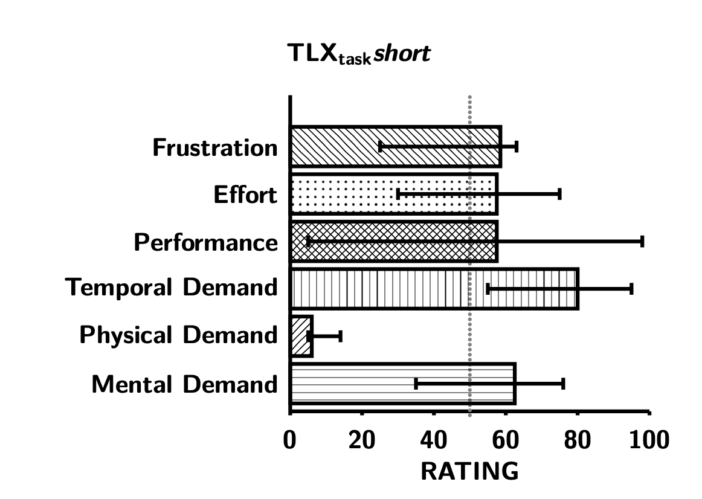 |
Investigating the Task Load of Investigating the Task Load in Visualization StudiesMost Likely to Make You Fill Out a Form About Filling Out a FormDaniel Pahr, Sara Di BartolomeoThe NASA task load index (short: NASA-TLX) is a common metric to evaluate the workload of a user in a visualization study. Yet, it is rarely performed as initially intended, as the sources-of-workload evaluation is often omitted for various reasons. We conduct an online survey to investigate the task load of administering different versions of the NASA-TLX in a meta-study using the ReVISit framework. Our results show that it is not the slight increase in experiment time, but rather participants’ frustration with the procedure, that contributes to the slight increase in task load when using the full version of the TLX compared to using a shortened version. However, we also show that the full version can shine a different and more faceted light on workload by adding a personal dimension to the data. We propose that a compact version of the sources-of-workload questionnaire can mitigate both time loss and frustration for study participants, while still providing the same data as the original procedure. The online study can be found and interactively explored on https://dpahr.github.io/tlxtlx/, and the source for the study, as well as the code for our analysis, can be found on https://github.com/dpahr/tlxtlx/. |
We invite the submission of original bold, provocative, unusual, unconventional, thought-provoking works related to visualization in the broad sense. The deadline for submissions is August 1, 2025, End of Day (AoE), updated: August 6, 2025, End of Day (AoE). See links below for submission details.
This year, we are introducing two submission tracks:
Submit via PCS
These are “traditional” papers intended to communicate a complete project or idea. Traditionally written works should be no longer than 4000 words (not including references), though longer papers will be considered if the additional length adds merit. Submissions to this track will be made through PCS.
While submissions may take the form of a conventional conference paper (such as the familiar TVCG format), you are welcome to use any template or medium that fits your work—this may include websites, videos, zines, comics, etc. However, all submissions must include a PDF for archiving purposes with at least a title, author names*, and abstract. Plagiarism (of any kind) will result in a rejection.
If you’re unsure what qualifies as trad.alt, we encourage you to browse previous accepted submissions from alt.VIS 2023, 2022, or 2021 for inspiration.
Submit via Google Form
This new “abstract-only” track is for bold ideas and early-stage works-in-progress that could benefit from discussion and collaboration within the alt.community. The goal of this session is to help grow these submissions into future research projects, proposals, or papers. During the workshop, presenters and attendees will explore clusters of these submissions through small-group discussion.
alt.alt submissions should be 400–800 words and clearly communicate your idea or direction. Submissions to this track will be made through a Google Form.
Submissions will be evaluated on clarity, novelty, and their potential to spark productive thought and discussion in the alt.VIS audience. This venue is meant for work that doesn’t quite fit the main VIS paper track—if your work might be better suited there, it probably is.
Accepted submissions will be made publicly available on the workshop’s website. Authors are encouraged to archive their work in their repository of choice, such as OSF or ArXiv. Submissions will not be included in the official IEEE VIS conference archive.
If you're unsure about how to format your work or which track to submit to, feel free to reach out at alt.vis.workshop@gmail.com.
* Authors serving in this workshop's organizing roles should include a COI statement in their PDF.
Authors of rejected (full-length) trad.alt submissions may be invited to convert their piece into an (abstract-only) alt.alt track piece. Through this process, we hope that original, thought-provoking ideas which are not yet ready for a full publication will have a platform to be further developed by and with the alt.vis community.
NOTE FOR EU SUBMITTERS: The alt.VIS workshop is Plan S compliant. 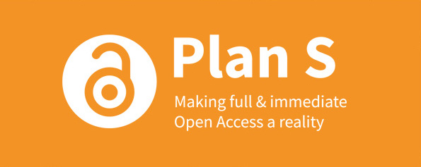
Andrew McNutt
University of Utah
mcnutt.in
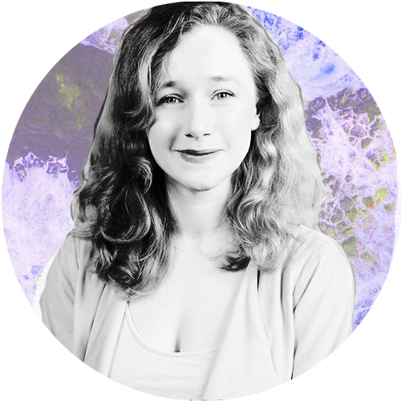
Sara Di Bartolomeo
TU Wien
picorana
picorana.github.io
Victor Schetinger
Skt Pölten University of Applied Sciences
@VSchetinger
scholar.google
Alyx Burns
Mount Holyoke College
@alyxburns.hci.social
alyxburns.com
Connor Scully-Allison
University of Utah
@cscullyallison
linkedin
Søren Knudsen
IT University of Copenhagen
sorenknudsen.com
Lonni Besançon
Linköping University
lonnibesancon.me
Michael Correll
Roux Institute, Northeastern University
correll.io
Jane Adams
Northeastern University
universalities.com
Charles Perin
University of Victoria
charlesperin.net
Questions? Contact us at alt.vis.workshop@gmail.com.